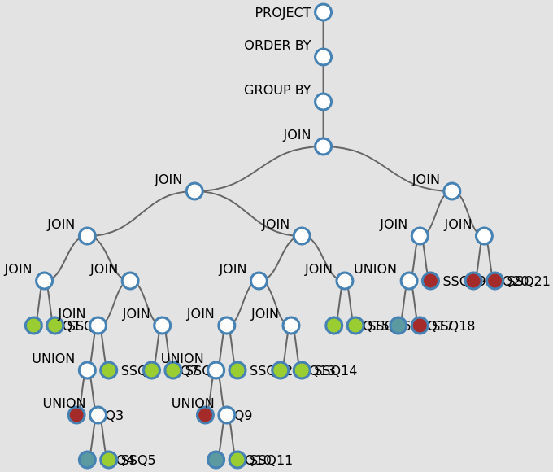
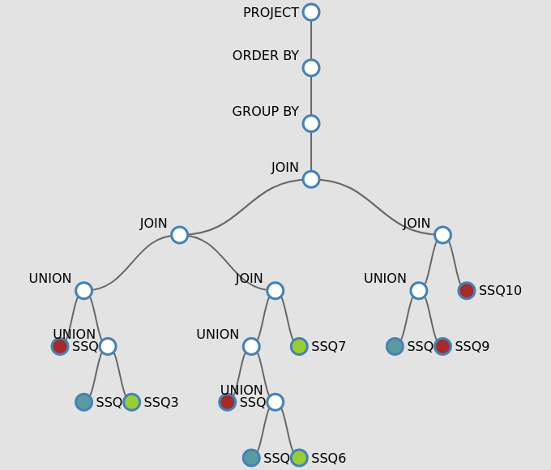
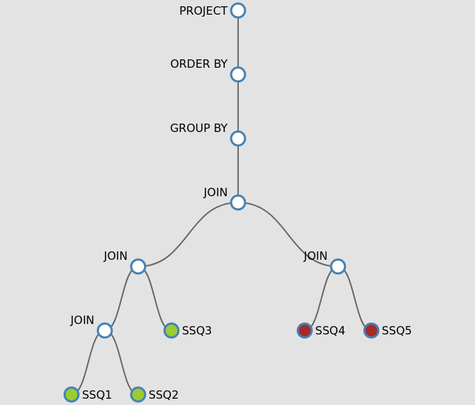
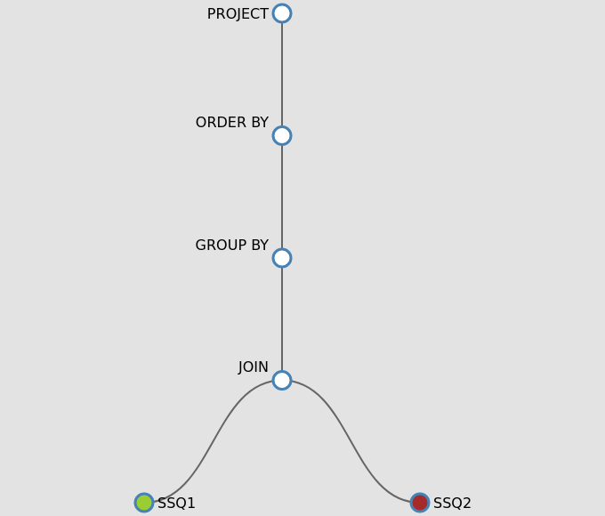

Decomposition Types
The primary goal of query decomposition is to transform a high-level query into the internal representation. During query decomposition, the query is checked syntactically. In distributed systems, as part of query restructuring, the original query is split into sub-queries. This is done since in most scenarios no source will be able to answer all triple patterns of the query. There are several approaches to how to build the sub-queries from the original one. The following describes the different decomposition types implemented in DeTrusty. At the end, a comparison of the presented decomposition types based on an example query is provided.
Triple-wise
Triple-wise decomposition considers each triple pattern of the query as a separate sub-query. The single-triple-pattern sub-queries are executed by all sources that serve the predicate. This decomposition type may lead to very expensive query plans.
Exclusive Groups
When using Exclusive Groups [2], the query is decomposed in such a way that each sub-query consists of triple patterns that can be exclusively answered by one source. Triple patterns with predicates occurring in several sources produce single-triple-pattern sub-queries that are executed by all sources that serve the predicate. Hence, queries with predicates that occur in multiple sources may be expensive following this type of decomposition.
Star-shaped Sub-queries
Following the star-shaped sub-queries decomposition [3], the query is decomposed in such a way that the triple patterns with the same subject form one sub-query. This mitigates the previously mentioned issue of predicates occurring in several sources since the combination of all predicates belonging to the sub-query is preferred.
Combined Star-shaped Sub-queries
When using the combined star-shaped sub-queries decomposition, the query is decomposed according to the star-shaped sub-query decomposition as described above. However, sub-queries that can be answered by the same source are merged into one sub-query if they can be joined. This type of decomposition exceeds if the source can perform the join efficiently and joining the sub-queries in the source reduces the size of the intermediate result significantly.
Comparison using an Example
This example serves to visualize the differences of the above-mentioned decomposition types. Consider a federation of knowledge graphs with the following characteristics as used in the project CoyPu. The statistics and execution times were collected on 2023-10-10 and are subject to change.
Knowledge Graph |
Triples |
Classes |
Predicates |
|---|---|---|---|
CoyPu Internal |
691,161,990 |
328 |
5,733 |
World Bank |
250,097,215 |
23 |
131 |
Wikidata (old) |
272,348 |
Q6256 (countries) only |
1,519 |
Wikidata |
287,369 |
Q6256 (countries) only |
1,592 |
The SPARQL query “Retrieve the GDP per capita and carbon emission per capita for Germany per year” is used for showing the differences of the decomposition types.
PREFIX wb: <http://worldbank.org/>
PREFIX dc: <http://purl.org/dc/elements/1.1/>
PREFIX time: <http://www.w3.org/2006/time#>
PREFIX wdt: <http://www.wikidata.org/prop/direct/>
PREFIX p: <http://www.wikidata.org/prop/>
PREFIX ps: <http://www.wikidata.org/prop/statement/>
PREFIX pq: <http://www.wikidata.org/prop/qualifier/>
PREFIX owl: <http://www.w3.org/2002/07/owl#>
SELECT ?year (AVG(?value/?population) AS ?gdp_per_capita) (AVG(?value1/?population)*1000000 AS ?carbon_per_capita)
WHERE {
?indicator a wb:AnnualIndicatorEntry .
?indicator wb:hasIndicator <http://worldbank.org/Indicator/NY.GDP.MKTP.CD> .
?indicator wb:hasCountry ?country .
?indicator owl:hasValue ?value .
?indicator time:year ?year .
?country dc:identifier 'DEU' .
?indicator1 a wb:AnnualIndicatorEntry .
?indicator1 wb:hasIndicator <http://worldbank.org/Indicator/EN.ATM.CO2E.KT> .
?indicator1 wb:hasCountry ?country1 .
?indicator1 owl:hasValue ?value1 .
?indicator1 time:year ?year .
?country dc:identifier 'DEU' .
?countryWiki wdt:P298 'DEU' .
?countryWiki p:P1082 ?itemP .
?itemP pq:P585 ?time.
?itemP ps:P1082 ?population .
BIND(year(?time) AS ?year)
}
GROUP BY ?year
ORDER BY ?year
Click on an image of a query plan to enlarge it and view all the details.
Decomposition Type |
Cardinality |
Execution Time |
Query Plan |
|---|---|---|---|
Triple-wise |
0 |
> 1 hour (timeout) |
 |
Exclusive Groups |
0 |
76.318 seconds |
 |
Star-shaped Sub-query |
18 |
35.445 seconds |
 |
Combined Star-shaped Sub-query |
18 |
9.816 seconds |
 |
{kind=link}
{kind=link}
{kind=link}
{kind=link}
The query execution times are slow due to the use of the public endpoint of Wikidata. They are not an indication of the performance of DeTrusty but show the differences in the performance of the decomposition types. Unfortunately, the query cannot be executed with the triple-wise and Exclusive Groups decomposition. These decomposition types lead to non-selective and very expensive sub-queries. Exclusive Groups is finishing the execution. However, some sub-queries sent to Wikidata are failing to to the 60 seconds timeout of the public SPARQL endpoint of Wikidata. This results in the plan created following Exclusive Groups to return no results. The plan created with the triple-wise decomposition is the most expensive one and timed out after one hour. This is due to the very long execution times of the non-selective sub-queries and the many joins of large intermediate results.